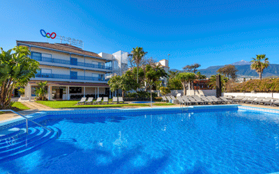

Un hotel ideal para la familia

Punta Cana es una localidad situada al este de la República Dominicana, en la provincia de La Altagracia. En esta localidad se ubican varios complejos hoteleros, cuya superficie total es de unos 420 000 m² (equivalentes a 42 hectáreas o 0,42 km²).
En Punta Cana se encuentra el Aeropuerto Internacional Punta Cana (PUJ), el principal aeropuerto del país, situado a unos 30 km hacia el interior, en la carretera que lleva desde Higüey hasta La Romana. Este aeropuerto recibe el 64% de todos los vuelos que llegan al país, por lo que recibe más pasajeros que el Aeropuerto Internacional de Las Américas, situado en Santo Domingo.
Administrativamente, Punta Cana es un distrito municipal perteneciente al municipio de Higüey bajo el nombre de Distrito Municipal Turístico Verón Punta Cana.2 Este distrito tenía según el censo de 2010 una población de 43 982 habitantes, de los cuales 37 286 eran del área urbana y 6696 del área rural.1